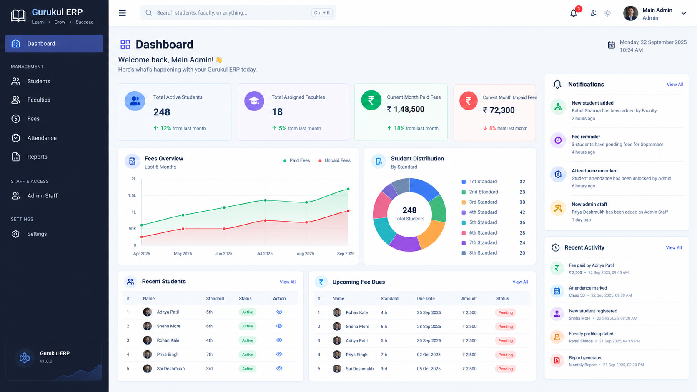
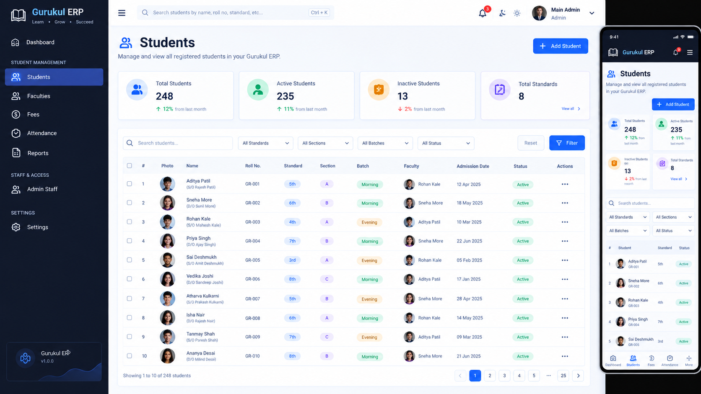
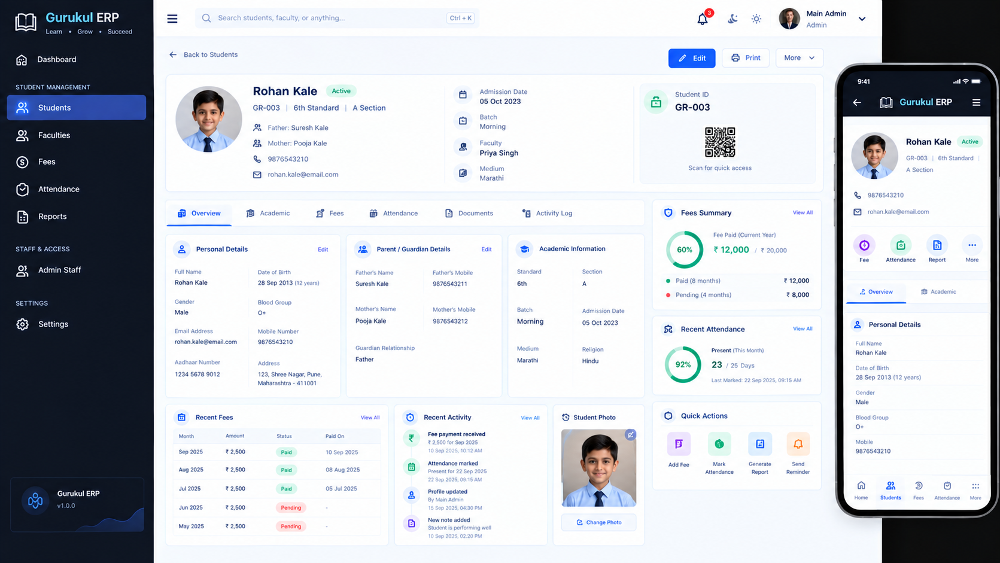
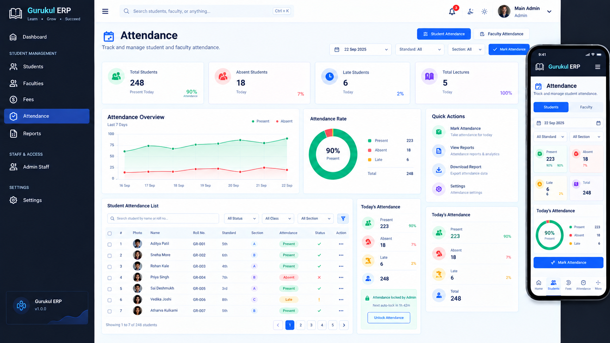

Gurukul Home Tuition ERP Enterprise Resource Planning
A self-developed digital management system created to solve real problems observed in my tuition class and bring student management into one organized platform.

A problem I noticed.
A system I decided to build.
While working around my tuition class, I noticed several everyday management problems that could be handled more efficiently through a digital system.
Instead of simply accepting those problems as part of the daily workflow, I started thinking about how technology could provide a practical solution.
That idea became the foundation of the Gurukul Home Tuition ERP.
Observe
Identify real problems in the existing tuition workflow.
Think
Understand how a digital system could simplify the process.
Build
Design and develop the system independently.
Improve
Continuously refine the experience and functionality.
One system.
Multiple workflows.
Gurukul Home Tuition ERP is a web-based management system created to organize important tuition-related information and workflows in a structured digital environment.
The project combines interface design, frontend development, database integration and responsive design into one practical application.
Why did I build it?
Everyday management can become difficult when information is scattered.
The idea behind this project came from observing problems in the actual class environment and thinking about how a centralized digital system could make the workflow more organized.
Manual Management
Managing student-related information manually can become repetitive and time-consuming.
Scattered Information
Important student records can become difficult to organize when information is maintained separately.
Daily Tracking
Regular student management and attendance workflows require a simple and accessible interface.
Need for Structure
A centralized system can provide a more organized way to manage recurring tasks.
What if I build
my own solution?
I didn't want to build a project just for demonstration. I wanted to create something connected to a real problem I had personally observed.
That thinking led me to design an ERP specifically around the requirements of a tuition-class environment.
Understand the actual workflow.
Create a simple and usable interface.
Turn the concept into a working system.
From idea
to working ERP.
Dashboard
A centralized interface that provides an overview of the system and its main workflows.
Student Management
A structured interface for managing student information and records.
Student Registration
A dedicated form-based interface for adding student information.
Attendance
A dedicated workflow for managing and tracking student attendance.
The control center
of the system.
Keep student information organized.
The student management interface provides a structured environment for handling student records and making information easier to access.


A simple way to add student records.
The registration interface is designed to keep the process straightforward and organized while entering student information.
Track attendance digitally.
Attendance is an important part of daily tuition management. The ERP includes a dedicated interface to make attendance tracking more structured.

Built around practical workflows.
Student Management
Manage student information through a dedicated digital interface.
Attendance
Maintain student attendance through a structured workflow.
Digital Records
Move important information into a more organized digital environment.
Search & Management
Make student-related information easier to access and manage.
Responsive Experience
The interface is designed with different screen sizes and usability in mind.
Scalable System
The project architecture allows the system to evolve with future requirements.
How I built it.
Understand
Studied the problems and requirements of the actual workflow.
Plan
Planned the structure, pages, components and overall user experience.
Design
Designed the interface with usability and visual clarity in mind.
Develop
Built the frontend, workflows and database integration.
Test
Tested the system and refined the user experience.
Improve
Continued improving the system based on practical requirements.
Technology used
to bring the idea alive.
The project combines interface development, responsive design and database integration to create a practical web application.
The focus was not only on making the system work, but also on creating an interface that feels organized and easy to use.
Structure
Interface & Responsive Design
Interactions & Functionality
Digital Data Management
Designed. Developed. Built by me.
This entire project was created independently by me — from identifying the problem and planning the solution to designing the interface and developing the working system.
Continuously evolving.
The ERP is a growing project. As new requirements are identified, the system can continue to evolve with additional functionality.
More than just
development.
Problem Solving
Real projects start with understanding the problem before thinking about the technology.
Independent Development
Building the system alone helped me understand the complete development cycle.
UI / UX Thinking
A useful system needs to be understandable and comfortable for its users.
Continuous Learning
Every problem during development became an opportunity to learn something new.
Where can this
go next?
The current system can be expanded further as the requirements of the tuition environment grow.